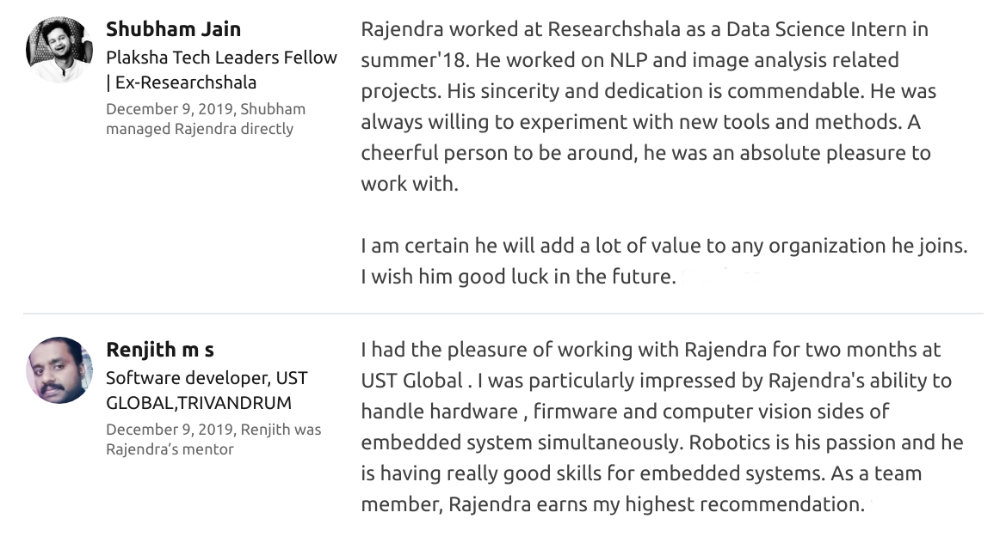

<div class="blurb">
	<br/>
<!-- 	<h1> NeRF Market Place</h1> -->
	<div class="sketchfab-embed-wrapper"> <iframe title="Base" frameborder="0" style='width: 100%' height="720" allowfullscreen mozallowfullscreen="true" webkitallowfullscreen="true" allow="autoplay; fullscreen; xr-spatial-tracking" xr-spatial-tracking execution-while-out-of-viewport execution-while-not-rendered web-share src="https://sketchfab.com/models/7084f31babcd4d02add4cb62d4c42039/embed"> </iframe> <p style="font-size: 13px; font-weight: normal; margin: 5px; color: #4A4A4A;"> <a href="https://sketchfab.com/3d-models/base-7084f31babcd4d02add4cb62d4c42039?utm_medium=embed&utm_campaign=share-popup&utm_content=7084f31babcd4d02add4cb62d4c42039" target="_blank" rel="nofollow" style="font-weight: bold; color: #1CAAD9;"> Base </a> by <a href="https://sketchfab.com/singh.raj1997?utm_medium=embed&utm_campaign=share-popup&utm_content=7084f31babcd4d02add4cb62d4c42039" target="_blank" rel="nofollow" style="font-weight: bold; color: #1CAAD9;"> singh.raj1997 </a> on <a href="https://sketchfab.com?utm_medium=embed&utm_campaign=share-popup&utm_content=7084f31babcd4d02add4cb62d4c42039" target="_blank" rel="nofollow" style="font-weight: bold; color: #1CAAD9;">Sketchfab</a></p></div>
	
<!-- 	<h1> Great Eagle Hobby Club</h1> -->
<!-- 	height="230" width="185" -->
<!-- 	<font size="4.5"><p>
		<br/><h2> Giving wings to the search and rescue mission!</h2>
		<br/>During disasters like flood, avalanche and wildfire often people get stranded in tough and hard to reach terrains. Hence a quick and efficient search operation is required to locate all the stranded people to quickly rescue them. Traditional search operations are often time taking and lack coordination. Thus, an innovative solution is required to expedite search operations as human lives are at the stake! We designed an intelligent autonomous coordinative multi-UAV system that can quickly search for the people/animals in the affected regions.</p>
	</font> -->
	
	<br/><br/><br/><br/><br/><br/><br/><br/><br/><br/><br/><br/>
<!-- 	 -->

<!-- 	<iframe style='width: 100%' height="720" src="https://www.youtube.com/embed/d6C2tSN_X5U" frameborder="0" allowfullscreen ng-show="showvideo" HSPACE="30" VSPACE="10"></iframe> -->
<!-- https://youtu.be/d6C2tSN_X5U -->

<!-- 	<br/><br/> -->
<!-- 	<p><br/>I'm an undergraduate student at <em>CSE, IIT Palakkad.</em> I'm passionate about vision-based robotics. I've participated in several robotics and ML related competitions. I was the former head of Robotics Club, IIT Palakkad. My major projects are based on the swarm, slam and vision-based pick and place. I am currently working on mobile manipulators based on ROS. My goal is to lead a robotics research lab and learn more about the field along the way. <a href="/about">Read more about my life...</a></p> -->
<!-- 	<br/><br/><br/><br/><br/><br/><br/><br/><br/><br/><br/><br/><br/><br/> -->
	
	
<!-- 	<h2 align="right">What others say about me on LinkedIn</h2>
<!-- 	 -->
	<br/><br/><br/><br/><br/><br/><br/><br/><br/><br/><br/><br/><br/><br/><br/><br/><br/><br/><br/><br/><br/><br/><br/><br/><br/><br/><br/><br/><br/><br/> -->
</div><!-- /.blurb -->
